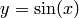
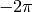
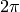
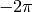
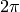
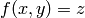
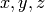
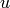
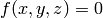

Sage может строить двумерные и трехмерные графики.
в двумерном пространстве Sage может отрисовывать круги, линии и полигоны; графики функций; также полярные, контурные и графики векторных полей. Некоторые примеры будут показаны ниже. Для более исчерпывающей информации по черчению см. Solving Differential Equations и Maxima, а также документацию Sage Constructions.
Данная команда построит желтую окружность радиуса 1 с центром в начале:
sage: circle((0,0), 1, rgbcolor=(1,1,0))
Также можно построить круг:
sage: circle((0,0), 1, rgbcolor=(1,1,0), fill=True)
Можно создавать окружность и задавать ее какой-либо переменной. Данный пример не будет строить окружность:
sage: c = circle((0,0), 1, rgbcolor=(1,1,0))
Чтобы построить ее, используйте c.show() или show(c):
sage: c.show()
c.save('filename.png') сохранит чертеж в файл.
Теперь эти окружности больше выглядят, как эллипсы, потому что оси имеют разные цены деления. Это можно исправить следующим образом:
sage: c.show(aspect_ratio=1)
Команда show(c, aspect_ratio=1) выполнит то же самое. Сохранить картинку можно с помощью c.save('filename.png', aspect_ratio=1).
Строить графики базовых функций легко:
sage: plot(cos, (-5,5))
Как только имя переменной определено, можно создать параметрический график:
sage: x = var('x')
sage: parametric_plot((cos(x),sin(x)^3),(x,0,2*pi),rgbcolor=hue(0.6))
Очень важно понять, что оси графика будут пересекаться лишь в том случае, если центр находится в поле зрения графика, и что с сравнительно большими значениями можно использовать научное обозначение:
sage: plot(x^2,(x,300,500))
Можно комбинировать чертежи, добавляя их друг другу:
sage: x = var('x')
sage: p1 = parametric_plot((cos(x),sin(x)),(x,0,2*pi),rgbcolor=hue(0.2))
sage: p2 = parametric_plot((cos(x),sin(x)^2),(x,0,2*pi),rgbcolor=hue(0.4))
sage: p3 = parametric_plot((cos(x),sin(x)^3),(x,0,2*pi),rgbcolor=hue(0.6))
sage: show(p1+p2+p3, axes=false)
Хорошей практикой создания заполненных фигур является создание списка точек (L в следующем примере), а затем использование команды polygon для построения фигуры с границами, образованными заданными точками. К примеру, создадим зеленый дельтоид:
sage: L = [[-1+cos(pi*i/100)*(1+cos(pi*i/100)),\
... 2*sin(pi*i/100)*(1-cos(pi*i/100))] for i in range(200)]
sage: p = polygon(L, rgbcolor=(1/8,3/4,1/2))
sage: p
Напечатайте show(p, axes=false), чтобы не показывать осей на чертеже.
Можно добавить текст к чертежу:
sage: L = [[6*cos(pi*i/100)+5*cos((6/2)*pi*i/100),\
... 6*sin(pi*i/100)-5*sin((6/2)*pi*i/100)] for i in range(200)]
sage: p = polygon(L, rgbcolor=(1/8,1/4,1/2))
sage: t = text("hypotrochoid", (5,4), rgbcolor=(1,0,0))
sage: show(p+t)
Учителя математики часто рисуют следующий график на доске:
не одну ветвь arcsin, а несколько, т.е. график функции  для  между 
и , перевернутый по отношению к линии в 45 градусов.
Следующая команда Sage построит вышеуказанное:
между 
и , перевернутый по отношению к линии в 45 градусов.
Следующая команда Sage построит вышеуказанное:
sage: v = [(sin(x),x) for x in srange(-2*float(pi),2*float(pi),0.1)]
sage: line(v)
Так как функция тангенса имеет больший интервал, чем синус, при использовании той же техники для перевертывания тангенса требуется поменять минимальные и максимальные координат для оси x:
sage: v = [(tan(x),x) for x in srange(-2*float(pi),2*float(pi),0.01)]
sage: show(line(v), xmin=-20, xmax=20)
Sage также может строить полярные чертежи, контурные чертежи и графики векторных полей (для специальных видов функций). Далее следует пример контурного чертежа:
sage: f = lambda x,y: cos(x*y)
sage: contour_plot(f, (-4, 4), (-4, 4))
Sage также быть использован для создания трехмерных графиков. Эти графики строятся с помощью пакета [Jmol], который поддерживает кручение и приближение картинки с помощью мыши.
Используйте plot3d, чтобы построить график функции формы :
sage: x, y = var('x,y')
sage: plot3d(x^2 + y^2, (x,-2,2), (y,-2,2))
Еще можно использовать parametric_plot3d для построения графиков
параметрических поверхностей, где каждый из 
определяется функцией одной или двух переменных (параметры; обычно
 и  ).
Предыдущий график может быть выражен параметрически в следующем виде:
).
Предыдущий график может быть выражен параметрически в следующем виде:
sage: u, v = var('u, v')
sage: f_x(u, v) = u
sage: f_y(u, v) = v
sage: f_z(u, v) = u^2 + v^2
sage: parametric_plot3d([f_x, f_y, f_z], (u, -2, 2), (v, -2, 2))
Третий способ построить трехмерную поверхность в Sage - использование implicit_plot3d, который строит контуры графиков функций, как . Чтобы построить сферу, возпользуемся классической формулой:
sage: x, y, z = var('x, y, z')
sage: implicit_plot3d(x^2 + y^2 + z^2 - 4, (x,-2, 2), (y,-2, 2), (z,-2, 2))
Ниже показаны несколько примеров:
sage: u, v = var('u,v')
sage: fx = (1+cos(v))*cos(u)
sage: fy = (1+cos(v))*sin(u)
sage: fz = -tanh((2/3)*(u-pi))*sin(v)
sage: parametric_plot3d([fx, fy, fz], (u, 0, 2*pi), (v, 0, 2*pi),
... frame=False, color="red")
Крученый тороид:
sage: u, v = var('u,v')
sage: fx = (3+sin(v)+cos(u))*cos(2*v)
sage: fy = (3+sin(v)+cos(u))*sin(2*v)
sage: fz = sin(u)+2*cos(v)
sage: parametric_plot3d([fx, fy, fz], (u, 0, 2*pi), (v, 0, 2*pi),
... frame=False, color="red")
Лемниската:
sage: x, y, z = var('x,y,z')
sage: f(x, y, z) = 4*x^2 * (x^2 + y^2 + z^2 + z) + y^2 * (y^2 + z^2 - 1)
sage: implicit_plot3d(f, (x, -0.5, 0.5), (y, -1, 1), (z, -1, 1))